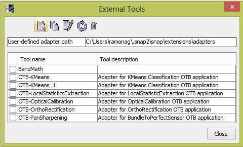
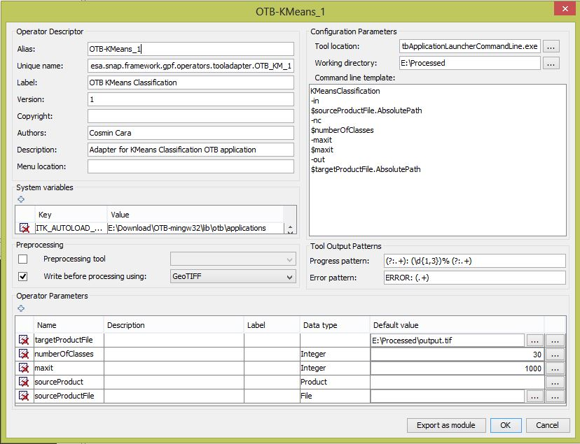

The user interface
The interface consists in 3 screens which allow the following operations: create new adapter, edit, duplicate and
delete an existing adapter, executing an adapter.
Managing the existing adapters
This form, having the title 'External tools', lists all the currently defined adapters, with a toolbar which contains
the buttons: new adapter, duplicate adapter, edit adapter, execute adapter, delete adapter. Under the toolbar,
there is a table containing the adapters where the user can check the adapter to apply the action form the toolbar.
If multiple adapters are checked, the action is applied to the first checked one.
This form can be invoked by using the menu Tools->Manage external tools of the SNAP application.

Creating a new adapter or modifying an existing one
The form for creating a new adapter is reused for editing an existing adapter and for duplicating an adapter.

The form is structured into multiple areas:
- descriptor details
- system variables
- pre-processing
- configuration
- tool output patterns
- parameters
For details about the operator structure and what is the use of each member, see here.
Descriptor details consists in folowing fields:
- Alias: a short name for the adapter to distinguish from the rest of the adapters, this alias will be used to
name the folder on disk where the operator resides, so special characters should not be used (for example,
on windows, the folowing characters are not allowed when defining a folder name: <>:"/\|?*). This is a
required field.
- Unique Name: this name is a name which registers the adapter in the toolbox. It must be unique. This is a
required field.
- Label: is the user-friendly name. This field is not required.
- Version:
- Copyright:
- Authors:
- Description:
- Menu Location: this represents the path to the menu where the tool shortcut will be placed. Usually,
this should be Tool/External tools/ToolAlias
System variables is a table containing the variables that must be set when the tools is executed. A new
variable can be added by using the + button and an existing one can be deleted by using the delete button
(X) in the left of the desired variable. The key and value of an variable can be edited by double-clicking
the corresponding cell.
Pre-processing area contains 2 field, each one with a checkbox and a combobox:
- Preprocessing tool: when this option is checked and an already defined tool is chosen in the combobox,
that tool is executed with the same input parameters values as the current tool, as the first step of the
execution of the current adapter.
- Write before preprocessing: when this option is checked and a writer is selected in the combobox, the product
is written to disk as the second step of the execution of the current adapter. The path where the product is
saved is given as the value of the parameter sourceProductFile
Configuration parameters includes:
- Tool location: location of the executable file corresponding to the tool.
- Working directory: the place where the temporary files are saved
- Command line template: the velocity template to be executed, including the command line arguments of the tool,
each one of them on a separate line.
Tool output patterns
Operator parameters - special area for template parameters (before/after)
Executing an adapter from SNAP